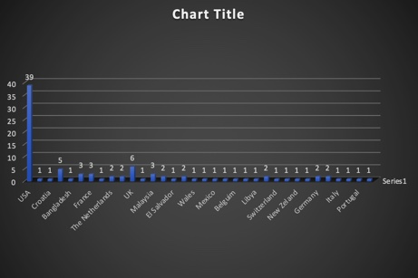
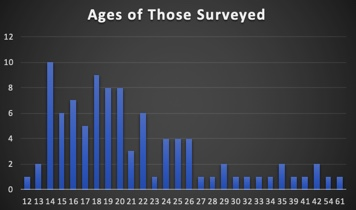
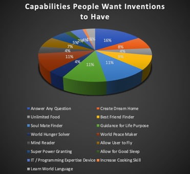
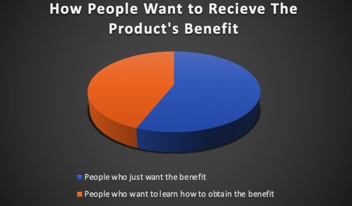
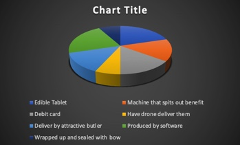

I wanted to use user research to narrow down what types of products or experiences people around
the world would like to have. Below I talk about the findings from a survey I gave to people world wise
and what types of products different businesses could make that would potentially be very successful
worldwide.
I visited Discord servers from around the world, asking their people to fill out this survey.
The goal of this survey was to get information about what invention would people want to have or create if given
a mix of broad options in some instances and free reign in other instances. The point of this survey
was to be a guide for product design if the goal was to make a product that would benefit
the greatest number of people. Over a hundred people responded to the survey, so let's break it down:
The breakdown of countries of origin of the participants are as follws:

Given that I am an English speaker, the majority of those polled turned out to be from the
United States, Canada, the UK, etc. However, fortunately, we do have a fair number of people
from non-English speaking parts of the world. There's representation from every continent, except
Antartica.

I then asked the survey takers if they could have one invention, what they'd like it to do.
The purpouse of this question is to figure out what function the product fit best serving.
The fact that this is a global question helps determine what type of product would be most
successful in an international market. Here is the result.

The top capabilities ppeople seemed to want in a product was the ability to answer whatever question
they had, followed by guidance for their life purpouse. Overall people seem to value abstract knowledge
at least a little more than tangible things like food or even super powers.So our product should be one that aria-has
the ability to provide real time answers and/ or guidance / insight to tough life situations.
If the latter becomes the goal, the item should be able to use advanced AI technology to pinpoint
and help the user understand and undertake their life purpose, after figuring out the user's skills,
interests, and aspirations.
So the next question is, how should this device achieve the end goal? Should it just provide
the thing for the user, or provide guidance and instruction on how to achieve this goal.
You might assume everyone would opt for the path of least resistance, receiving the desired benefit upfront. However, surprisingly,
even if given the opportunity to just have the fish (in this case whatever benefit the product is giving the user), akmost half of all surveyed (44%) would rather be taught
how to fish and keep some level of responsibility for obtaining the desired benefit.

This is a tricky situation. There's a clear preference for wanting to automatically have the product's
benefit, but, we do have a sizeable percentage of people who would like to have guidance rather
than being given the benefit. Whether it'd be possible to make an product that can do both should at
least be considered,
So now that we have an idea of what the item should do and how the goal (the product's capability) should be tackled,
now the question is what should the product look like. When asked how they would like the product's benefit to be delivered to them, here are the results:

Now, given our goals, some of these options might seem confusing or impossible to make products out
of. We already have debit cards, for example, reinventing it would be meaningless. While that may
be true, what the popularity of this choice tells us, is that people value maintaining the power to
choose and purchase whatever it is they want. People want something that will give them a
sense of choice and let them keep power. We could make a software that allows a user's questions to be answered, but
a more innovative solution would be to make tablets that give people access to the knowledge and guidance they seek.
This would be done by finding ways the tablet could stimulate the brain to have it go into overdrive
and figure out answers to whatever question the person has. Perhaps the pill helps the taker absorb knowledge
from a self help book better than they could before so they can use their new knowledge to
help them find their life's purpouse for example.
The next step after determining what product needs to be made is determining what staff we need
to work on this project. Here we need neuroscientists and psychologists to provide the knowledge and research we'd need
We then need pharmaseutical scientists to use this knowledge to formulate the tablets. How long
one tablet can influence the brain needs to be determined to figure out how many tablets each customer
would consume in a given time frame. UX researchers might be sent out to get a grasp of how often
someone might consume this tablet. The project then gets underway.
You may ask however, "What if the company is only able to make purely software solutions?"
I asked survey takers what type of program they would like to make / have created if they could.
The three biggest common trends in the answers were
1. Solving worldwide problems
2. Making a video game, and
3. A program that enhances / helps the mind solve some problem.
Seeing
that these trends reflect the wants of the international market, this can help determine a
program that would perform well internationally. Since there are people who want to
work for their own benefit of the product, we also need to try and allow for a self-service
functionality to the program. So you might want, for example, a program that allows you to put in a question
and the user can select whether they just want the answer or guided assistance to arrive at the answer.
Now what if the business in question is an entertainment / catering business and they're looking to
understand what peoples' idea of a good time is. I asked people to describe their dream party
and the potential cost of it. When surveyed, the average of all costs people put down for their dream
parties was $63,563.35 US dollars. Mind you, just like any question in this survey, not everyone answered this question
and some left joke or non-numeric answers.
Many people however, left the cost of this party being 0. This ties into the trend seen in the next question on the survey:
What people would want to happen at that party. In general, most people wanted to just have a chill party where they got to
hang out with their friends. Ideally therefore, businesses would want to make things / methods to
enhance that core experience. Simplicity is key so we don't want to produce something that would over-complicate
the experience. An extra survey could be ran to determine what exactly people might want at a
party, but based off of what people would want in their dream party,the priorities are: lots of
food and fun simple party games to enjoy with friends. Also the ability to interact with Discord
friends. A super innovative, semi-futuristic idea for tech companies would be to enhance VR technology so
that people could have a more personal but much cheaper solution to getting to interact with their online
friends that they wish to hang out with.
As for our catering/ entertainment businesses, a company could, for example rent out party rooms with video gameconsoles and unlimited food people can
rent out. Not everyone likes the loud arcade type party places there are, so a business that
provided rooms for parties where the host did not have to clean would be an optimal business
people would pay for anywhere in the world. There could even be different "tiers" for parties
to allow for parties to be customized and range in prices for the host's convinience.
As for a possible product, something simple that keeps people's food hot in real time, just
like you have coolers to keep soda conviniently located and cold would be an excellent product
that would keep parties simple and be desirable by any party host.
This survey has revealed that food , security of knowledge / life direction, friends, and technology
that enhance these elements of life are all important potential considerations for making new
innovative products that would be competitive in the international market.